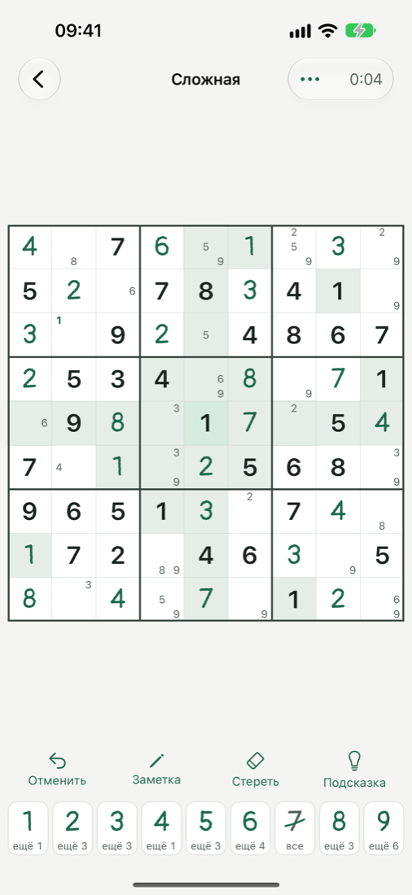

Судоку на тетрадном листе.
Данные цифры графитом, твои — зелёными чернилами. Решил одну — следующая в одном касании.
Ещё одну?
Скоро в App Store
Следующая партия должна просто быть
Во многих судоку следующая головоломка приходит после ожидания, дневного лимита или чего-то поверх доски.
А «сложная» часто не такая уж сложная, подсказка просто ставит цифру, а потерянную серию не вернуть.
Как это устроено
- Выбери уровеньОт лёгкой до эксперта — или одну из четырёх партий дня.
- РешайКлетка, потом цифра — или цифра, потом клетки. Удержи цифру, чтобы поставить заметку.
- Ещё одну?Следующая партия готова, как только ты закончил.
Для долгих вечеров с сеткой
Четыре партии дня
По одной на каждый уровень, одинаковые для всех, у каждой своя таблица в Game Center.
Эксперт — правда сложный
Уровень определяют приёмы, нужные для решения, вплоть до X‑wing и swordfish. Всегда одно решение, без угадывания.
Подсказки, которые учат
Подсказка называет приём и показывает, где он работает. Цифру ставишь, только если хочешь.
Двенадцать коротких уроков
Каждый приём простыми словами и с настоящей позицией из партий Клетки.
Ввод, который успевает
Вся клетка — зона касания. Сначала клетка или сначала цифра. Удержание — заметка.
Заметки как надо
Девять в клетке, каждая на своём месте. Отмена возвращает заметки, которые стёрла цифра.
Крупная, ясная сетка
Доска во всю ширину, яркие границы блоков 3×3.
Не теряет место
Закрой приложение посреди партии — вернёшься к тому же ходу. История и серия хранятся в твоём iCloud.
Вид под себя
Светлая и тёмная тема, зелёные или графитовые чернила, четыре фона доски и четыре иконки.
Всё уже в приложении
Клетку можно скачать бесплатно, и все уровни, партии дня, подсказки, уроки и оформление открыты всем с первого запуска.
Если хочешь поддержать — вот тут. Это по желанию и ничего не открывает.
Вопросы
Правда всё включено?
Да. В приложении нечего покупать. Ссылка «Поддержать» на этом сайте — по желанию и ничего в игре не меняет.
Работает без интернета?
Полностью. Партии встроены в приложение, а Game Center догонит, когда интернет появится.
Серия пропадёт, если сменить телефон?
Нет. История и серия синхронизируются через твой iCloud и возвращаются после переустановки.
Как определяется уровень?
По самому сложному приёму, который нужен для решения. Лёгкой хватает одиночек, эксперту нужны цепочки трудных шагов вроде X‑wing и swordfish.
Партия дня у всех одинаковая?
Да. Четыре в день, по одной на уровень, меняются в полночь по UTC (в 03:00 по Москве).
На каких устройствах и языках?
iPhone и iPad с iOS 17 и новее. Русский и английский.